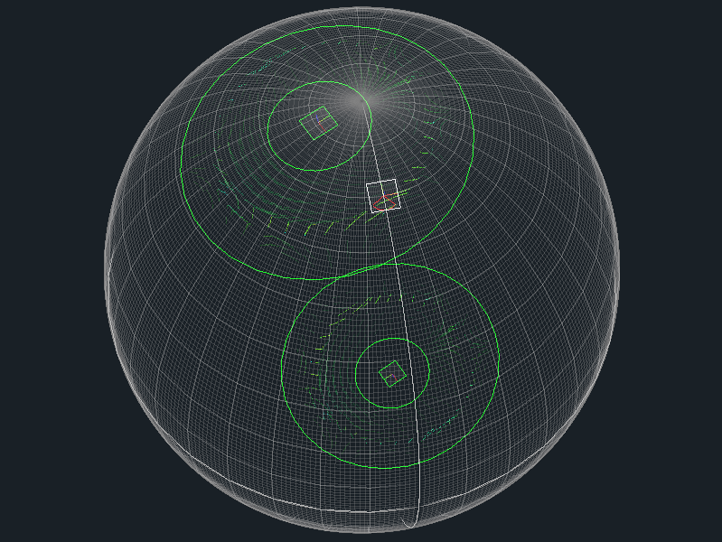
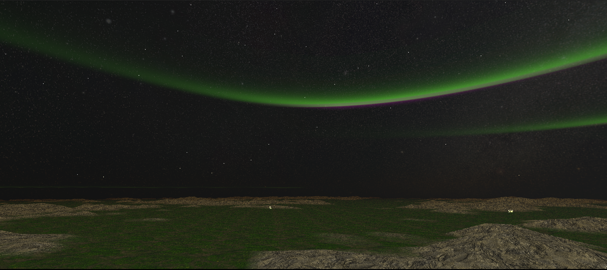
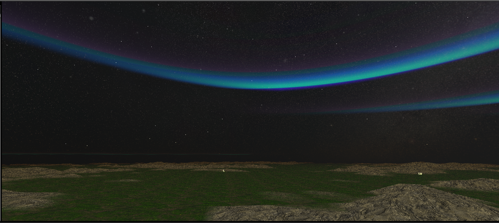
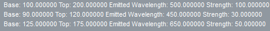
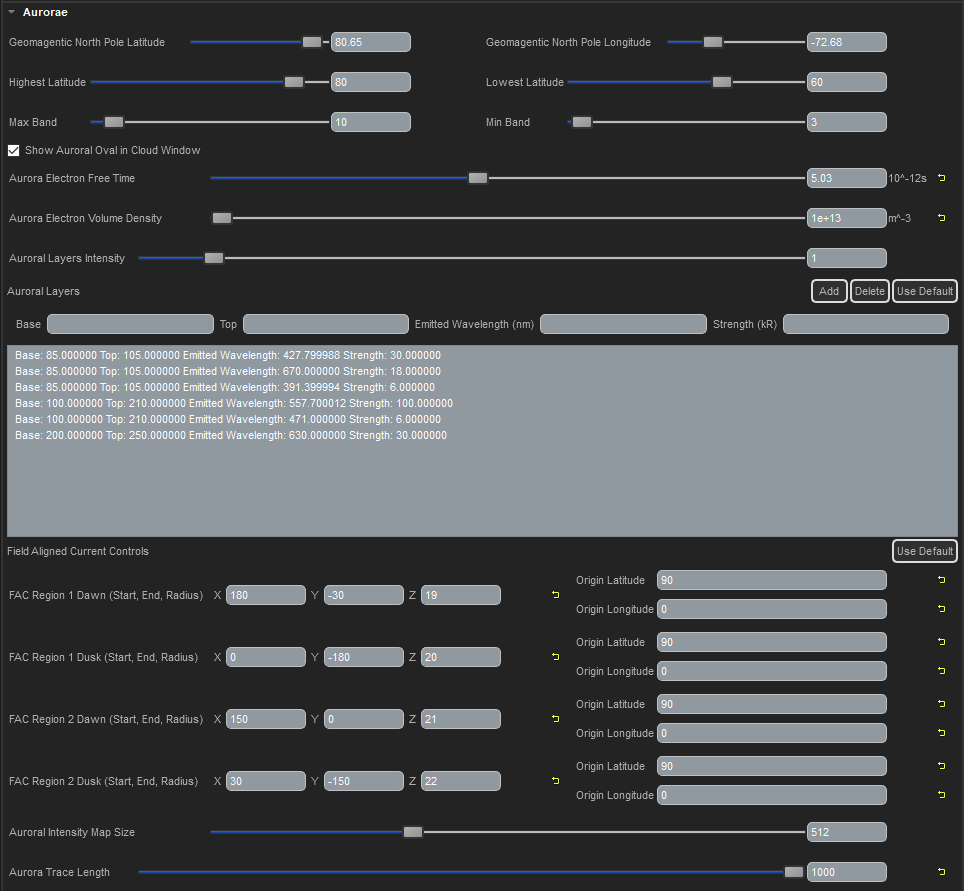
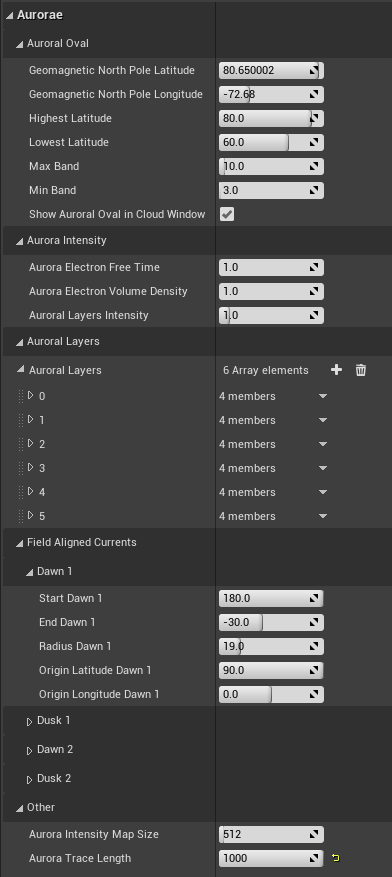
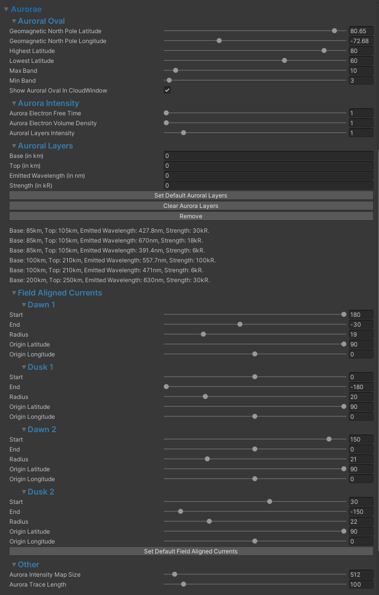

Aurorae Tutorial¶
Overview¶
Aurorae are automatically generated by trueSKY providing that some conditions are met. To view aurorae, the view position will need to be within the Auroral Oval; a region of maximal auroral intensity. There are various controls to position the Auroral Oval globally along with its shape and size. Currently, Max Band and Min Band are unused.
CloudWindow with Auroral Oval displayed:
UI and Controls¶
The intensity of aurorae can be adjusted by modifying the Electron Free Time and Electron Volume Density, both of which affect the conductivity of electrons in the upper atmosphere. There’s also a general-brightness control. Aurorae have distinct layers to them, which are dependent on the atmospheric gaseous composition, altitude and electron energy. The default aurora layers simulate the Earth’s aurora, but you can add and delete layers as you like - Design your own alien aurorae.
Aurora Layers - Earth:
Aurora Layers - Alien with layer details:
 The shape of aurorae is defined by the interactions of electrons and other charged particles from the solar wind with the planet’s electromagnetic field in the upper atmosphere. To adjust the generation of aurorae, you can modify the four FAC (Field Aligned Currents) controls. These adjust the arc length, radius and global position for each of the four field aligned currents. View the How it works section for a more full description of how trueSKY generates aurorae.
Aurorae UI and controls - SkySequencer:
UE4¶
Aurorae UI and controls - Unreal Engine 4:
Unity¶
Aurorae UI and controls - Unity:
